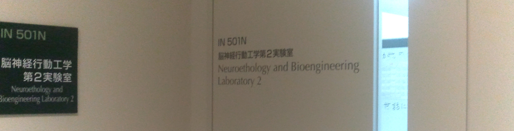
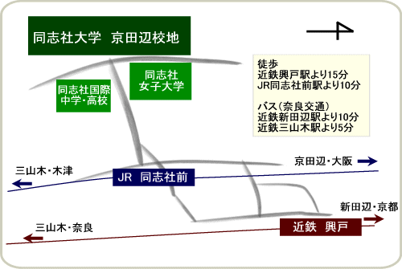

研究室へのコンタクト
Contact us
Last updated May 8, 2021.
当研究室について
当研究室では，様々な動物（ヒト，コウモリ，ネズミなど）の行動を神経回路レベルで明らかにする神経行動学（Neuroethology）と， 生物からヒントを得て社会に役立つ新しい技術を開発する生命工学（Bioengineering）の2つを合わせて研究しています。 生き物の行う情報処理の仕組みを解明し，その結果を工学や産業に応用することで社会へ成果を還元していきます。 例えば，音を頼りに行動するコウモリの生物ソナーや，子育てや喧嘩など様々な場面でネズミがおこなう音声コミュニケーション，濁った水中でサカナが周囲を察知する電気知覚能力など，多くの動物の行動から学んでいます。 コアタイムはありませんが，週に一回程度のペースで研究室の全体ゼミが開催され，研究成果などについて議論します。 また，当研究室への配属後は原則として大学院生と学部生がペアとなって研究テーマに取り組みます。 当研究室の学部4年生は例年，9月ごろに卒業論文のテーマについて中間発表をおこない，研究の成果や方針について議論します。 また，当研究室ではメンバー同士で協力し合って実験に取り組み，動物を管理し，学生が主体となって研究室を運営している点も大きな特色の一つです。

当研究室への配属希望者へ
当研究室は同志社大学 生命医科学部 医情報学科および生命医科学研究科 医工学・医情報学専攻 医情報学コースに設置されています。 これまで当課程の学部生や大学院生のみならず，他学部の学生や外国からの留学生，高等専門学校からのインターンシップも受け入れており，活発に研究活動を進めています。 当研究室への配属などを希望する方は
問い合わせ受付フォーム
(下記QRコードも可)，またはメールからご連絡ください。
メール
shiryu[at]mail.doshisha.ac.jp (教授：飛龍志津子)
kkobayas[at]mail.doshisha.ac.jp (教授：小林耕太)
住所
〒610-0394 京都府京田辺市多々羅都谷1-3
交通アクセス
当研究室は同志社大学京田辺キャンパス・医心館(IN)にあります。
キャンパスへの交通アクセス(
http://www.doshisha.ac.jp/information/campus/access/kyotanabe.html
)
キャンパス内の地図(
http://www.doshisha.ac.jp/information/campus/kyotanabe/kyotanabe.html#campusmap
)
